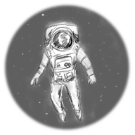

Судный день
Пётр Косых
Играть онлайн
Корпус корабля лопнул и его содержимое, в виде сотен блестящих на Солнце осколков, хлынуло в открытый космос. Всё произошло за один миг. Всего лишь пол секунды -- и сложный, отлаженный механизм превратился в облако космического мусора...
Одним из сверкающих осколков был ты. Белый скафандр отлично отражал лучи, делая тебя яркой светящейся точкой в чёрной пустоте.
Вращаясь, ты медленно плыл в темноте...